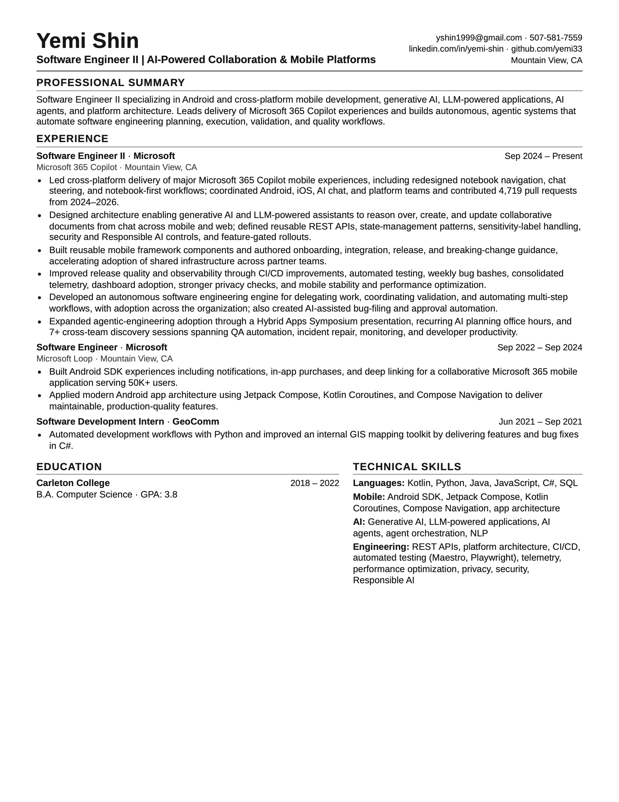

My work, on paper.
AI-powered collaboration, mobile platforms, and a habit of building things.

The text version
a little easier on small screensYemi_Shin_Resume_AI_Mobile.txt
Yemi Shin
Software Engineer II | AI-Powered Collaboration & Mobile Platforms
yshin1999@gmail.com · 507-581-7559
linkedin.com/in/yemi-shin · github.com/yemi33
Mountain View, CA
Professional summary
Software Engineer II specializing in Android and cross-platform mobile development, generative AI, LLM-powered applications, AI agents, and platform architecture. Leads delivery of Microsoft 365 Copilot experiences and builds autonomous, agentic systems that automate software engineering planning, execution, validation, and quality workflows.
Experience
Software Engineer II · Microsoft
Sep 2024 – Present
Microsoft 365 Copilot · Mountain View, CA
- Led cross-platform delivery of major Microsoft 365 Copilot mobile experiences, including redesigned notebook navigation, chat steering, and notebook-first workflows; coordinated Android, iOS, AI chat, and platform teams and contributed 4,719 pull requests from 2024–2026.
- Designed architecture enabling generative AI and LLM-powered assistants to reason over, create, and update collaborative documents from chat across mobile and web; defined reusable REST APIs, state-management patterns, sensitivity-label handling, security and Responsible AI controls, and feature-gated rollouts.
- Built reusable mobile framework components and authored onboarding, integration, release, and breaking-change guidance, accelerating adoption of shared infrastructure across partner teams.
- Improved release quality and observability through CI/CD improvements, automated testing, weekly bug bashes, consolidated telemetry, dashboard adoption, stronger privacy checks, and mobile stability and performance optimization.
- Developed an autonomous software engineering engine for delegating work, coordinating validation, and automating multi-step workflows, with adoption across the organization; also created AI-assisted bug-filing and approval automation.
- Expanded agentic-engineering adoption through a Hybrid Apps Symposium presentation, recurring AI planning office hours, and 7+ cross-team discovery sessions spanning QA automation, incident repair, monitoring, and developer productivity.
Software Engineer · Microsoft
Sep 2022 – Sep 2024
Microsoft Loop · Mountain View, CA
- Built Android SDK experiences including notifications, in-app purchases, and deep linking for a collaborative Microsoft 365 mobile application serving 50K+ users.
- Applied modern Android app architecture using Jetpack Compose, Kotlin Coroutines, and Compose Navigation to deliver maintainable, production-quality features.
Software Development Intern · GeoComm
Jun 2021 – Sep 2021
- Automated development workflows with Python and improved an internal GIS mapping toolkit by delivering features and bug fixes in C#.
Education
Carleton College
2018 – 2022
B.A. Computer Science · GPA: 3.8
Technical skills
Languages: Kotlin, Python, Java, JavaScript, C#, SQL
Mobile: Android SDK, Jetpack Compose, Kotlin Coroutines, Compose Navigation, app architecture
AI: Generative AI, LLM-powered applications, AI agents, agent orchestration, NLP
Engineering: REST APIs, platform architecture, CI/CD, automated testing (Maestro, Playwright), telemetry, performance optimization, privacy, security, Responsible AI